Introduction
Battery balancer and equalizer solutions play a vital role in optimizing the performance and longevity of battery plants. As battery systems are deployed in various applications, such as renewable energy storage, electric vehicles, and backup power systems, it becomes crucial to ensure that individual battery cells within the plant are balanced and equalized. These solutions help to mitigate issues related to cell voltage imbalances, capacity variations, and premature aging, which can negatively impact the overall efficiency and reliability of the battery plant. By actively monitoring and managing the charge levels and health of each battery cell, balancer, and equalizer solutions ensure optimal energy distribution, extend battery life and promote overall system stability. With their advanced features and intelligent algorithms, these solutions empower battery plant operators to maximize performance and return on investment while maintaining a sustainable and resilient energy infrastructure.
How battery balancer and equalizer solutions Work
Battery balancer and equalizer solutions work by actively monitoring and managing the individual battery cells within a battery plant. These solutions employ sophisticated algorithms and control mechanisms to ensure that each cell is balanced and equalized. Balancing refers to the process of equalizing the voltage levels of battery cells, while equalizing involves redistributing charges to ensure consistent capacity across the cells.
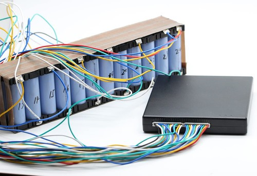
Typically, battery balancer and equalizer solutions use voltage and current sensing techniques to measure the state of each cell. Based on this data, they determine the optimal charging and discharging paths for each cell. If a cell is found to have a higher voltage or capacity than others, the balancer solution will divert excess charge away from that cell, transferring it to cells with lower levels. Similarly, if a cell has a lower voltage or capacity, the equalizer solution will direct charge towards that cell, balancing its performance with the rest.
These solutions operate in real-time, continuously monitoring and adjusting the charge distribution among the battery cells. They ensure that no single cell is overcharged or undercharged, minimizing the risk of cell damage, capacity degradation, and premature aging. By maintaining a balanced and equalized battery plant, these solutions optimize the overall performance, efficiency, and lifespan of the system, enabling reliable and sustainable energy storage for various applications.
The Parameters that affect the process
Several parameters can influence the process of battery balancer and equalizer solutions in a battery plant. These parameters include:
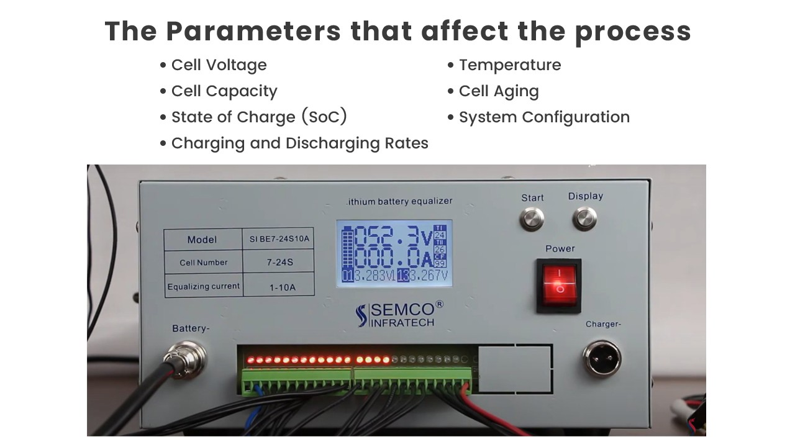
Cell Voltage: The voltage level of individual battery cells is a critical parameter that determines the need for balancing and equalization. If there are significant voltage imbalances between cells, the balancer and equalizer solutions will work to redistribute charge and equalize the voltages.
Cell Capacity: Battery cells may have variations in their capacity, leading to uneven energy distribution. Balancer and equalizer solutions take into account the capacity differences and ensure that charge is properly redistributed to achieve equal capacity levels across cells.
State of Charge (SoC): The state of charge refers to the amount of charge present in a battery cell. Balancer and equalizer solutions monitor the SoC of each cell to identify any imbalances. They then adjust the charge flow to maintain uniform SoC levels across all cells.
Charging and Discharging Rates: The rate at which the battery plant charges and discharges can impact the need for balancing and equalization. Higher charging or discharging rates may lead to uneven energy distribution among cells, necessitating active balancing and equalization.
Temperature: Battery temperature affects cell performance and can impact the need for balancing and equalization. Higher temperatures can accelerate capacity loss and voltage imbalances, making balancing and equalization more critical.
Cell Aging: Over time, battery cells can experience varying levels of degradation and aging. Balancer and equalizer solutions take into account the aging characteristics of cells and adapt their balancing and equalization strategies accordingly to optimize performance and extend battery life.
System Configuration: The configuration of the battery plant, such as series or parallel connections, influences how balancing and equalization are implemented. Different system configurations may require specific algorithms or strategies to ensure effective balancing and equalization.
By considering these parameters, battery balancer, and equalizer solutions can effectively monitor, manage, and adjust the charge distribution within a battery plant, ensuring optimal performance, longevity, and reliability of the system.
Basic Principles
The basic principles of battery balancer and equalizer solutions for a battery plant involve the following:
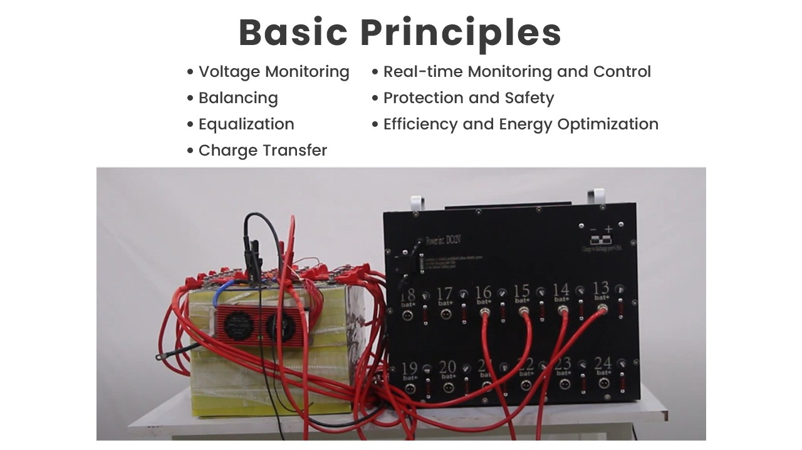
Voltage Monitoring: Balancer and equalizer solutions continuously monitor the voltage levels of individual battery cells within the plant. By measuring the voltage of each cell, these solutions can detect any significant imbalances or deviations from the desired voltage range.
Balancing: If a voltage imbalance is detected, the balancer solution activates to redistribute charge among the battery cells. It diverts excess charge from cells with higher voltages and transfers it to cells with lower voltages, aiming to achieve a balanced voltage level across all cells.
Equalization: In addition to balancing voltages, equalizer solutions ensure that the capacity of each cell remains consistent. By monitoring the state of charge (SoC) of each cell, equalizers redistribute charge to cells with lower SoC, helping to maintain uniform capacity levels throughout the battery plant.
Charge Transfer: Balancer and equalizer solutions facilitate charge transfer between battery cells to achieve balancing and equalization. They employ control mechanisms and electronic components, such as switches, to redirect the flow of charge and maintain equilibrium among cells.
Real-time Monitoring and Control: These solutions operate in real-time, continuously monitoring the state of battery cells and dynamically adjusting the charge distribution. They utilize advanced algorithms and control strategies to optimize the balancing and equalization process.
Protection and Safety: Battery balancer and equalizer solutions incorporate safety mechanisms to protect against overcharging, over-discharging, and other potential risks. They may include voltage and current monitoring, temperature sensors, and fault detection mechanisms to ensure the safe and reliable operation of the battery plant.
Efficiency and Energy Optimization: Balancer and equalizer solutions aim to optimize the overall efficiency and energy utilization of the battery plant. By maintaining balanced voltages and equal capacity levels, they minimize energy losses, improve system performance, and prolong the lifespan of the batteries.
These basic principles guide the operation of battery balancer and equalizer solutions, ensuring that individual battery cells within a plant are actively monitored, balanced, and equalized to maximize performance, reliability, and longevity.
Benefits of The Machines
Battery balancer and equalizer solutions offer several benefits for a battery plant. Some of the key benefits include:
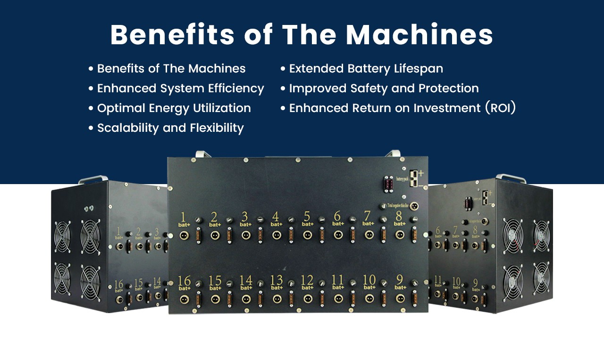
Improved Battery Performance: Balancer and equalizer solutions actively monitor and manage the state of individual battery cells, ensuring balanced voltages and equal capacity levels. This optimization leads to improved battery performance, including enhanced energy storage efficiency, better power output, and increased overall system reliability.
Extended Battery Lifespan: By actively balancing voltages and equalizing capacity, these solutions help mitigate cell voltage imbalances, capacity variations, and premature aging. As a result, the battery plant experiences reduced wear and tear, leading to an extended lifespan of the batteries and lower maintenance costs over time.
Enhanced System Efficiency: Balancer and equalizer solutions optimize the charge distribution among cells, reducing energy losses and maximizing the energy utilization of the battery plant. This increased efficiency translates into improved system performance, higher energy conversion rates, and ultimately, cost savings for the plant operator.
Improved Safety and Protection: These solutions incorporate safety features to protect against overcharging, over-discharging, and other potential risks. By actively monitoring cell voltages and currents, temperature levels, and fault detection, they help maintain a safe operating environment, mitigating the risk of cell damage, thermal runaway, and other safety hazards.
Optimal Energy Utilization: Balancer and equalizer solutions ensure that the available energy within the battery plant is evenly distributed among cells. This balanced energy utilization prevents certain cells from becoming overused or underutilized, maximizing the overall energy storage capacity of the plant and improving its operational efficiency.
Enhanced Return on Investment (ROI): With improved battery performance, extended lifespan, increased system efficiency, and reduced maintenance costs, balancer, and equalizer solutions contribute to a higher return on investment for the battery plant operator. They optimize the use of available resources, minimize downtime, and maximize the overall value of the battery system.
Scalability and Flexibility: These solutions are designed to be scalable and adaptable to different battery plant configurations and requirements. They can be integrated into various applications, such as renewable energy storage, electric vehicles, and backup power systems, offering flexibility and compatibility with diverse energy storage setups.
In summary, battery balancer and equalizer solutions provide numerous benefits, including improved battery performance, extended lifespan, enhanced system efficiency, increased safety, optimal energy utilization, improved ROI, and scalability. These advantages contribute to the overall reliability, longevity, and cost-effectiveness of the battery plant.
Semco battery balancer and equalizer solutions
SEMCO offers a comprehensive range of cutting-edge R&D solutions designed to meet the diverse requirements of battery plant owners. Renowned for their exceptional quality and advanced technology, SEMCO's battery balancer and equalizer solutions stand out as industry leaders. Let's explore some of their notable products:
Semco Lithium Battery Equalizer:
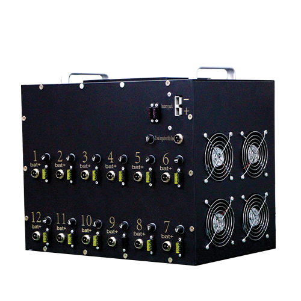
Semco SI BB 24SS-10A: This battery equalizer is engineered to provide efficient balancing for 24-cell lithium battery systems, with a maximum current capacity of 10A.
Semco SI BB 24S-20A: Offering enhanced power, this equalizer supports 24-cell lithium battery systems with a higher current capacity of 20A.
Semco Portable Lithium Battery Equalizer:
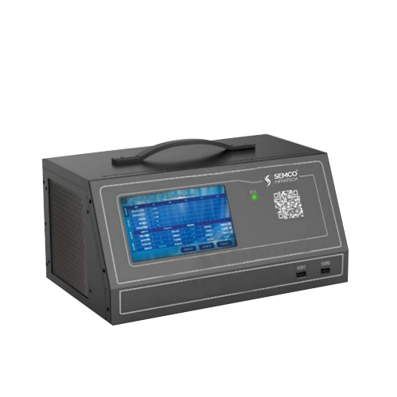
SI BE 124-02A: This portable equalizer is designed for easy and convenient use, offering efficient balancing for lithium battery systems.
Semco Lithium Battery Equalization Tester:
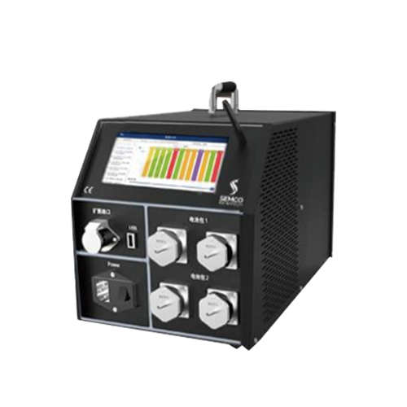
SI BE 24S 5A, SI BE 1255CT, SI BE 3655, SI BE 4855: These testers provide accurate equalization testing capabilities for lithium battery systems, catering to different cell configurations and current requirements.
Semco Lithium Battery Equalizer:
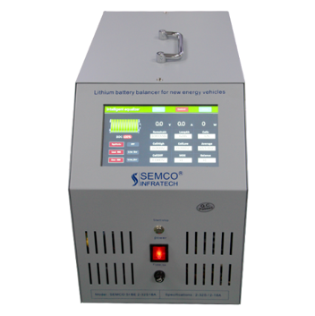
Semco SI BE 2-32S-10A and Semco SI BE 2-24S-10A: These equalizers are specifically designed to balance lithium battery systems ranging from 2 to 32 cells, with a current capacity of 10A.
Semco Lithium Battery Discharge Charge Unit:
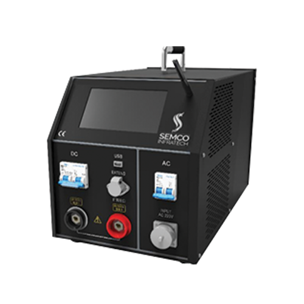
SI CDM A200CT, and SI CDM A300CT: These units offer reliable discharge and charge capabilities for lithium battery systems, with a capacity of 200CT and 300CT, respectively.
SI CDM 100V 30A, SI CDM 600 30NT: These units provide high-voltage discharge and charge functions, with a current capacity of 30A.
Semco Active Battery Equalizer:
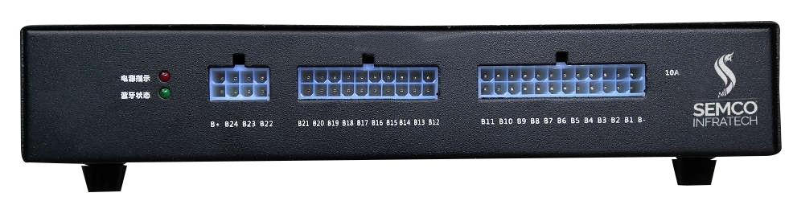
SI BE 24S 10A BT, SI BE 16S 2A BT: These active equalizers ensure effective balancing for 24-cell and 16-cell lithium battery systems, respectively, with Bluetooth connectivity for convenient monitoring and control.
SEMCO Battery Balance Repair Instrument:
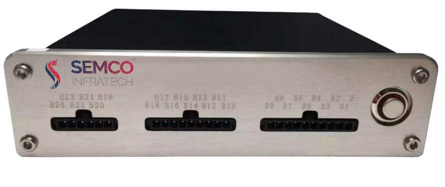
SI BE 24S 5A BT, SI BE 24S 2A BT: These repair instruments offer efficient balancing and repair capabilities for 24-cell lithium battery systems, with current capacities of 5A and 2A, respectively.
Semco Lithium Battery Equalizer:
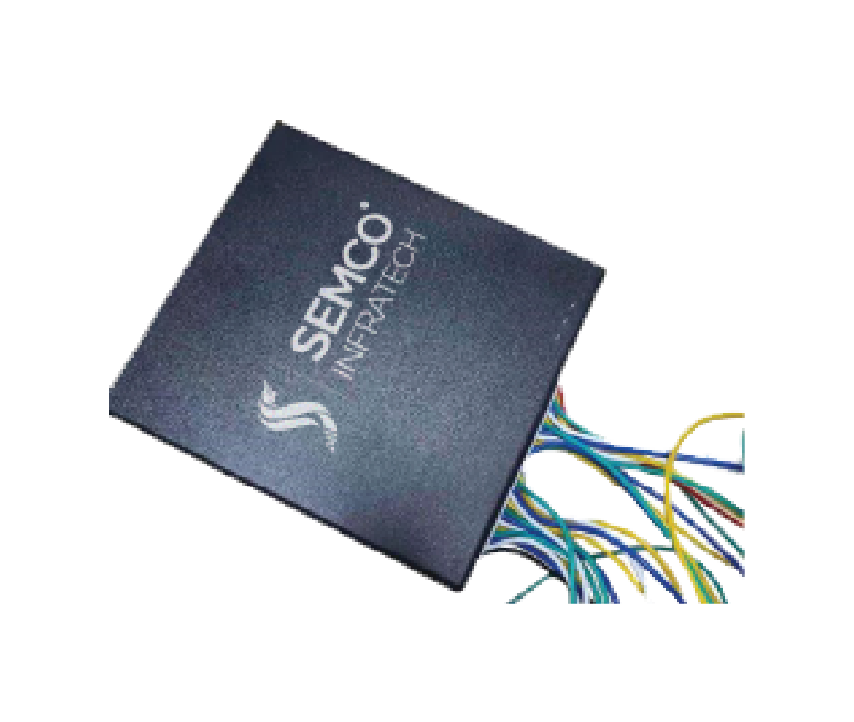
SI BE3-4S 5A, SI BE 4-6S 5A, SI BE 6-8S 5A, SI BE 17-21S 4A, SI BE 10-24S 4A, SI BE 9-14S 5A, SI BE 12-16S 5A: These equalizers cater to a wide range of lithium battery configurations, providing optimal balancing performance for various cell counts.
Semco Capacitive Active Balance:
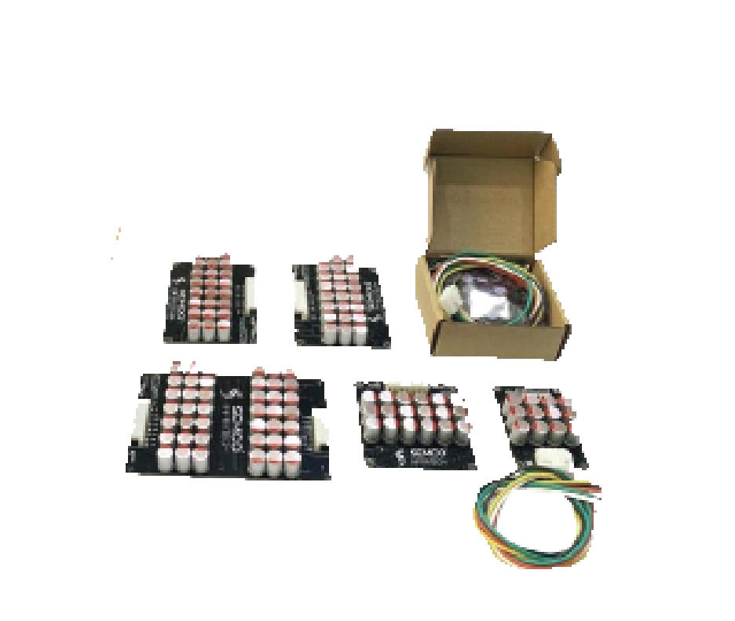
SI BE 9-14S 5A Capacitive, SI BE 12-16S 5A Capacitive, SI BE 17-21S 5A Capacitive: These active balancers utilize capacitive technology to ensure efficient balancing for lithium battery systems with different cell counts.
Semco Balance Module:
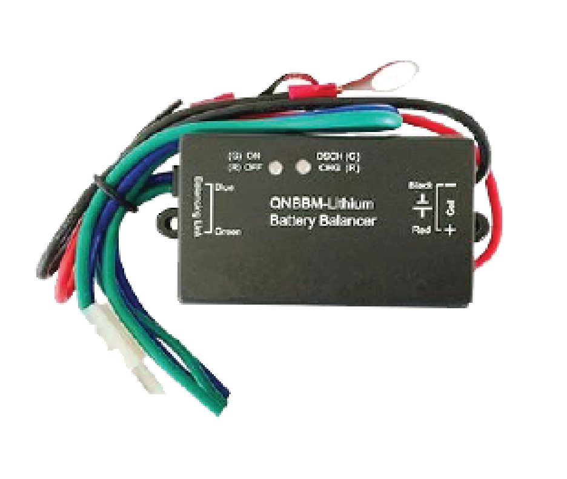
SI 1S Balance Module, SI 4S Balance Module, SI 5S Balance Module, SI 6S Balance Module, SI 7S Balance Module, SI 8S Balance Module: These balance modules are designed to achieve precise balancing for lithium battery systems with various cell configurations, offering flexibility and reliability.
Lithium-ion Cell Balancer (Semco SI Active Balance Board):
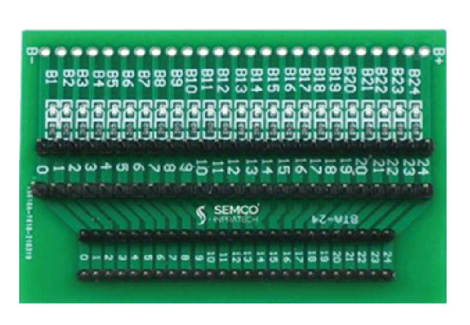
Available for 2-4S, 6-7S, 9-10S, 12-13S, 16-18S, and 20-24S configurations, these active balance boards ensure optimal balancing and performance for lithium-ion cells.
Semco Inductive Active Balancer:
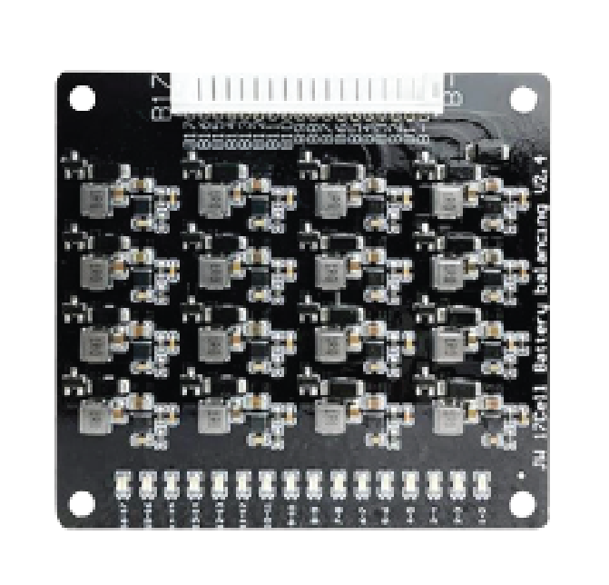
SI BE 16S 1.2A Inductive, SI BE 17S 1.2A Inductive: These active balancers utilize inductive technology to achieve efficient balancing for 16-cell and 17-cell lithium battery systems, respectively.
Balance Capacity Device:
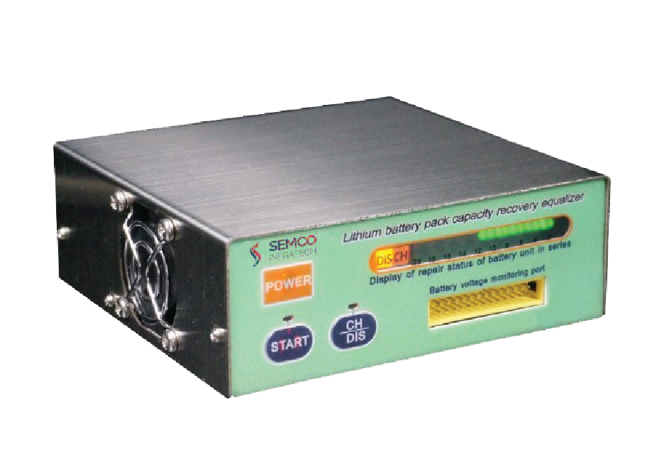
SI BAL 520: This device offers precise measurement and evaluation of the capacity balance for battery systems, ensuring optimal performance and longevity.
In summary, SEMCO's battery balancer and equalizer solutions encompass a wide range of products designed to cater to the specific needs of battery plant owners. With its advanced technology, reliability, and versatility, SEMCO continues to set the industry standard for battery balancing and equalization.
How to use
To effectively utilize battery balancer and equalizer solutions in a battery plant, the following technical steps can be taken:
System Integration: Begin by integrating the battery balancer and equalizer solutions into the existing battery plant infrastructure. This involves connecting the balancer units to the battery system and ensuring proper electrical connections and communication interfaces.
Configuration Setup: Configure the balancer and equalizer units according to the specific requirements of the battery plant. This includes setting the desired balancing parameters such as voltage thresholds, current limits, and balancing algorithms. Consult the manufacturer's guidelines and technical documentation for optimal configuration settings.
Monitoring and Control: Utilize the monitoring and control capabilities provided by the balancer and equalizer solutions. This may involve using a centralized control system or individual unit interfaces to monitor the state of the battery system, such as cell voltages, temperatures, and overall battery health. Regularly monitor these parameters to ensure the battery system operates within safe limits.
Balancing Initiation: Initiate the balancing process based on the predetermined conditions or schedule. The balancer units will detect any voltage imbalances among the battery cells and take corrective action to equalize the charge across the cells. This could involve transferring energy from higher voltage cells to lower voltage cells, thereby leveling out the charge distribution.
Continuous Monitoring: During the balancing process, closely monitor the progress and effectiveness of the balancer and equalizer solutions. Observe the cell voltages and monitor the balancing currents to ensure that the desired equalization is achieved. Adjust the balancing parameters if necessary to optimize the performance.
Maintenance and Troubleshooting: Regularly maintain the battery balancer and equalizer units as recommended by the manufacturer. This may involve cleaning, calibrating, and inspecting the units for any signs of malfunction or damage. In case of any issues or abnormal behavior, refer to the troubleshooting guides provided by the manufacturer or seek professional assistance to diagnose and resolve the problem.
By following these technical steps, battery plant operators can effectively utilize battery balancer and equalizer solutions to maintain optimal performance and prolong the lifespan of the battery system. Regular monitoring, proper configuration, and timely maintenance are essential for maximizing the benefits of these solutions and ensuring the efficient operation of the battery plant.
Conclusion:
In conclusion, battery balancer and equalizer solutions offered by SEMCO provide a comprehensive and advanced approach to maintaining the performance and longevity of battery systems in a plant. With a wide range of products catering to different cell configurations and current capacities, SEMCO's solutions enable efficient balancing and equalization, ensuring that the charge distribution among cells remains optimal. By integrating these solutions into a battery plant and following proper setup, monitoring, and maintenance procedures, operators can effectively manage voltage imbalances, enhance overall battery performance, and extend the lifespan of the battery system. SEMCO's battery balancer and equalizer solutions stand out as reliable, technologically advanced, and industry-leading options for battery plant owners seeking to optimize their battery systems' efficiency and reliability.
Got the solution to your battery worries then what are you waiting for book a live demo and operate your battery plant without any hassles and tensions. If you liked our newsletter then do not forget to share and comment and stay tuned for our next Newsletter on “Aftersales Products Range Of Load Bank/Discharger”. Till then “Happy Batteries”.